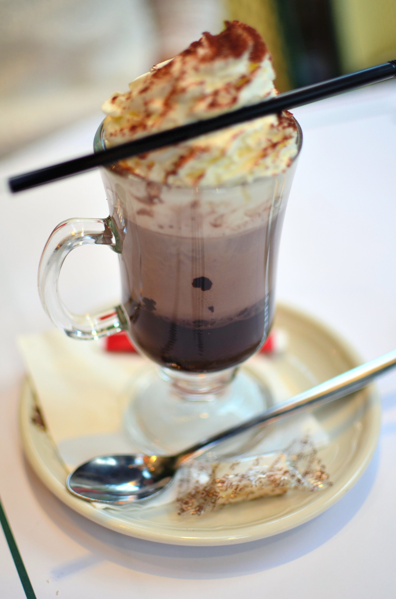

French Hot Chocolate

Description
A creamy, rich, decadent and delicious Hot Chocolate done the French way.
Ingredients
- 1 1/2 cups whole milk
- 1/2 cup heavy cream
- 2 teaspoons of powdered sugar
- 1/2 teaspoon espresso powder
- 8 oz bittersweet chocolate (70%), chopped
- Giant bowl of whipped cream for serving
Steps
- In a medium saucepan over medium heat, whisk together the whole milk, heavy cream, powdered sugar, and espresso powder until small bubbles appear around the edges. Do not allow the mixture to boil.
- Remove from saucepan from the heat and stir in the chopped chocolate until melted, returning the sauce to low heat if needed for the chocolate to melt completely. Serve warm, topped with lots of whipped cream.